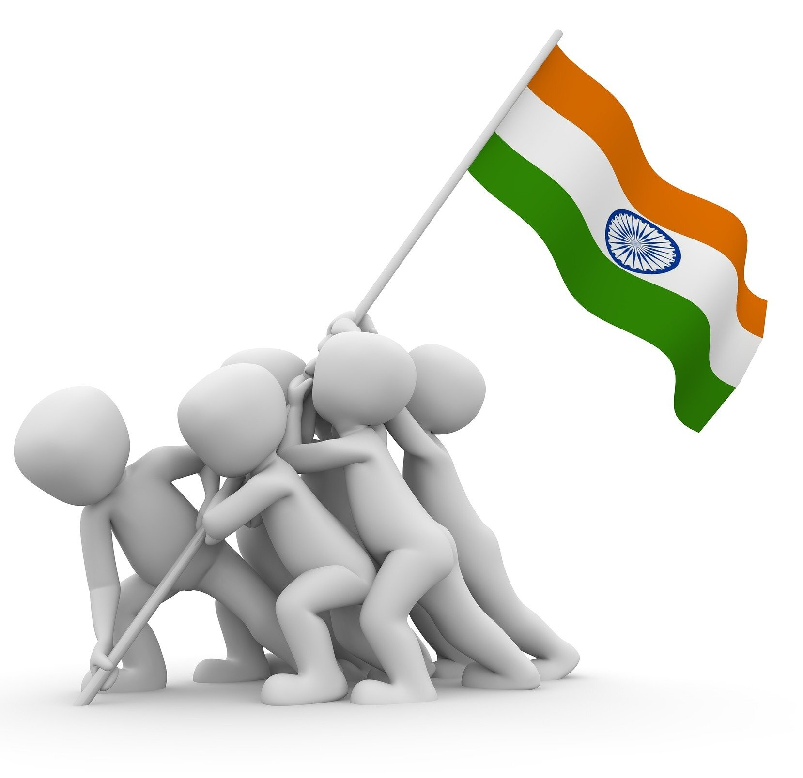

Summary
The Indian independence movement was a series of historic events with the ultimate aim of ending British rule in India. It lasted from 1857 to 1947.
The first nationalistic revolutionary movement for Indian independence emerged from Bengal. It later took root in the newly formed Indian National Congress with prominent moderate leaders seeking the right to appear for Indian Civil Service examinations in British India, as well as more economic rights for natives. The first half of the 20th century saw a more radical approach towards self-rule by the Lal Bal Pal triumvirate, Aurobindo Ghosh and V. O. Chidambaram Pillai. The last stages of the self-rule struggle from the 1920s was characterized by Congress' adoption of Gandhi's policy of non-violence and civil disobedience. Intellectuals such as Rabindranath Tagore, Subramania Bharati, and Bankim Chandra Chattopadhyay spread patriotic awareness. Female leaders like Sarojini Naidu, Pritilata Waddedar, and Kasturba Gandhi promoted the emancipation of Indian women and their participation in the freedom struggle. B. R. Ambedkar championed the cause of the disadvantaged sections of Indian society.